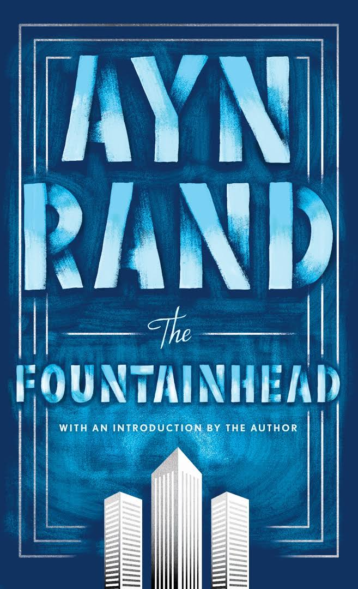

I born and brought up in my home town called Devarapalli where i did my schooling upto 7th standard and then i have completed my studies from 8th to 10th in Rajamundry.
The Fountainhead is a 1943 novel by Russian-American author Ayn Rand, her first major literary success. The novel's protagonist, Howard Roark, is an intransigent young architect, who battles against conventional standards and refuses to compromise with an architectural establishment unwilling to accept innovation. Roark embodies what Rand believed to be the ideal man, and his struggle reflects Rand's belief that individualism is superior to collectivism
